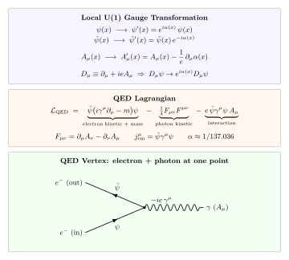

U(1) 规范对称怎么给出电磁学?
上一节 Noether 定理告诉我们: 连续全局对称自动对应一个守恒流. 把它应用到 Dirac 自由电子的 U(1) 相位 $\psi \to e^{i\alpha}\psi$ 上, 立刻就得到守恒流 $j^\mu = \bar\psi\gamma^\mu\psi$, 它的零分量是电荷密度, 总电荷不随时间变. 这是第一性原理给的免费午餐. 但这里 $\alpha$ 是一个全世界同步的常数 —— 听起来有点奇怪: 我在实验室转一个相位, 需要告知远在仙女座的电子同步也转吗? 为什么相位是一个"宇宙级"的刚体变量?
物理学家对这种"远程配合"很不安. Weyl 在 1918 年和 1929 年两次把它推广: 允许 $\alpha = \alpha(x)$ 逐点独立 —— 这叫局部或规范 (gauge) 对称. 这一推广是粒子物理整个二十世纪脊梁骨. 它的第一个成果, 就是本节要推的电动力学量子化版本 —— QED, 量子电动力学. 我们要认真地把"局部 U(1) 为什么必须带来一个光子"这句被引用成陈词滥调的话, 一行一行推完.
一、全局 U(1): Noether 给的电荷守恒
先把自由 Dirac 拉氏量摆上桌. $\psi$ 是 4 分量旋量, $\bar\psi = \psi^\dagger\gamma^0$, Dirac 矩阵满足 $\{\gamma^\mu,\gamma^\nu\} = 2\eta^{\mu\nu}$, 空时号 $(+,-,-,-)$. 拉氏量
$$\mathcal L_0 = \bar\psi(i\gamma^\mu\partial_\mu - m)\psi.$$考虑全局相位变换 $\psi(x) \to e^{i\alpha}\psi(x)$, $\alpha$ 是常数. 由于 $\bar\psi \to \bar\psi e^{-i\alpha}$, 组合 $\bar\psi\psi$ 与 $\bar\psi\gamma^\mu\partial_\mu\psi$ 里两个相位恰好相消: $\mathcal L_0$ 原封不动. 按照上一节 Noether 定理, 无穷小参数下 $\delta\psi = i\alpha\psi$, 守恒流为
$$j^\mu = \frac{\partial\mathcal L_0}{\partial(\partial_\mu\psi)}\cdot i\psi + \text{c.c.} = -\bar\psi\gamma^\mu\psi.$$约定去掉整体符号, 取 $j^\mu_{\rm em} = \bar\psi\gamma^\mu\psi$. 运动方程给出 $\partial_\mu j^\mu = 0$, 零分量是电荷密度 $\rho = \bar\psi\gamma^0\psi = \psi^\dagger\psi \ge 0$ (Dirac 形式保证概率/电荷密度正定), 空间积分不随时间变. 这就是电荷守恒的场论推导: 不是实验总结, 而是 U(1) 对称的直接数学后果.
但我们要提一个"不舒服"的问题: 上面的 $\alpha$ 是常数, 逐点同步. 自然界真会要求这种全球同步吗? 狭义相对论反复教我们: 瞬时同步对不同观察者意味不同的事件集, 没有绝对的"同一时刻". 一个只在全局意义上成立的对称, 其实有点反相对论味道. 这是引入局部规范原理的哲学出发点.
二、局部 U(1) 的严格 deepdive: 为什么必须有 $A_\mu$?
这一节是全节的心脏, 所以一步都不能省. 现在让相位 $\alpha$ 变成时空函数 $\alpha(x)$, 记局部变换
$$\psi(x) \to \psi'(x) = e^{i\alpha(x)}\psi(x), \qquad \bar\psi(x) \to \bar\psi(x)e^{-i\alpha(x)}.$$先看质量项 $-m\bar\psi\psi$. 两边相位照旧相消, 无事. 真正惹祸的是包含导数的那一项. 直接对 $\psi'$ 做 $\partial_\mu$:
$$\partial_\mu\psi'(x) = \partial_\mu\big(e^{i\alpha(x)}\psi(x)\big) = e^{i\alpha(x)}\big(\partial_\mu\psi(x) + i\,\partial_\mu\alpha(x)\cdot\psi(x)\big).$$关键是第二项 —— 额外冒出来的 $i\,\partial_\mu\alpha\cdot\psi$. 代回 Dirac 项:
$$\bar\psi'i\gamma^\mu\partial_\mu\psi' = \bar\psi e^{-i\alpha}\cdot i\gamma^\mu\cdot e^{i\alpha}\big(\partial_\mu\psi + i\,\partial_\mu\alpha\,\psi\big) = \bar\psi i\gamma^\mu\partial_\mu\psi \;-\; \bar\psi\gamma^\mu\psi\,\partial_\mu\alpha(x).$$自由 Dirac 拉氏量在局部 U(1) 下 不 不变: 多了个流形上的边角料 $-\bar\psi\gamma^\mu\psi\,\partial_\mu\alpha(x) = -j^\mu_{\rm em}\partial_\mu\alpha$. 这一项不能通过积分部分扔掉, 因为 $\alpha(x)$ 是任意函数. 要让理论对任意 $\alpha(x)$ 保持不变, 必须让某个额外场吃掉它.
怎么吃? 我们问: 能否引入一个矢量场 $A_\mu(x)$, 它在同一个局部 U(1) 下按某种规则变换, 并出现在拉氏量的一个新项里, 让这个新项产生的变分恰好抵消 $-\bar\psi\gamma^\mu\psi\,\partial_\mu\alpha$?
先猜一个最简单的耦合: 在拉氏量里加
$$\mathcal L_{\rm int} \;=\; -e\,\bar\psi\gamma^\mu\psi\,A_\mu.$$其中 $e$ 是电子电荷 (SI 单位这里吸收进了 $A_\mu$ 的单位; 我们用自然单位 $\hbar=c=\varepsilon_0=1$). 要求 $A_\mu$ 在局部 U(1) 下变换为
$$A_\mu(x) \to A'_\mu(x) = A_\mu(x) - \frac{1}{e}\,\partial_\mu\alpha(x).$$验证一下: 在变换下 $\mathcal L_{\rm int}$ 变化为
$$-e\,\bar\psi\gamma^\mu\psi\,A'_\mu = -e\bar\psi\gamma^\mu\psi A_\mu + \bar\psi\gamma^\mu\psi\,\partial_\mu\alpha.$$多出来的 $+\bar\psi\gamma^\mu\psi\,\partial_\mu\alpha$ 恰好把 Dirac 项多出来的 $-\bar\psi\gamma^\mu\psi\,\partial_\mu\alpha$ 干掉. 合并 $\mathcal L_0 + \mathcal L_{\rm int}$ 在局部 U(1) 下严格不变. 这一套方式可以更紧凑地改写: 定义规范协变导数
$$D_\mu \equiv \partial_\mu + ieA_\mu,$$则 $D_\mu\psi$ 在局部变换下表现得像 $\psi$ 本身 —— $D_\mu\psi \to e^{i\alpha(x)}D_\mu\psi$. 因为
$$D'_\mu\psi' = \big(\partial_\mu + ieA'_\mu\big)e^{i\alpha}\psi = e^{i\alpha}\big(\partial_\mu\psi + i\partial_\mu\alpha\,\psi\big) + ie\big(A_\mu - \tfrac{1}{e}\partial_\mu\alpha\big)e^{i\alpha}\psi = e^{i\alpha}\big(\partial_\mu + ieA_\mu\big)\psi = e^{i\alpha}D_\mu\psi.$$于是 $\bar\psi\,i\gamma^\mu D_\mu\psi$ 在局部 U(1) 下完全不变, 和质量项合起来构成规范不变的物质扇区:
$$\mathcal L_{\rm matter} = \bar\psi(i\gamma^\mu D_\mu - m)\psi = \bar\psi(i\gamma^\mu\partial_\mu - m)\psi - e\bar\psi\gamma^\mu\psi A_\mu.$$请注意这一行里数学和物理同时在发生什么: 为了给相位"自由", 我们必须随身携带一个矢量场; 这个矢量场一出现, 就附带一个与电流线性耦合的相互作用项. "规范对称" 不是从相互作用"推导"出来的, 而是从几何上"命令" 相互作用必须这样写, 耦合强度和形式都被定死 —— 这种刚性就是规范理论可被检验的部分.
但 $A_\mu$ 不能只当"辅助变量", 它必须自己有动力学. 要补一个 kinetic 项. 最简单、也是最被对称性允许的做法, 是从规范不变量 $F_{\mu\nu} = \partial_\mu A_\nu - \partial_\nu A_\mu$ 出发 —— 这个张量在 $A_\mu \to A_\mu - (1/e)\partial_\mu\alpha$ 下严格不变, 因为偏导数对易 $[\partial_\mu,\partial_\nu]\alpha = 0$. 标量化的最低阶洛伦兹不变量是 $F_{\mu\nu}F^{\mu\nu}$, 加上惯例系数 $-\tfrac14$ 保证正定动能, 得到光子扇区. 合起来就是
\begin{equation} \mathcal L_{\rm QED} \;=\; \bar\psi\big(i\gamma^\mu D_\mu - m\big)\psi \;-\; \frac{1}{4}F_{\mu\nu}F^{\mu\nu}, \qquad D_\mu = \partial_\mu + ieA_\mu. \end{equation}一行公式里藏着整个 QED. 展开写成
\begin{equation} \mathcal L_{\rm QED} = \bar\psi(i\gamma^\mu\partial_\mu - m)\psi \;-\; \frac{1}{4}F_{\mu\nu}F^{\mu\nu} \;-\; e\,\bar\psi\gamma^\mu\psi\,A_\mu. \end{equation}三项分别是: 电子自由动力学、光子自由动力学、电子 - 光子顶点相互作用. Feynman 顶点因子 $-ie\gamma^\mu$ 就从第三项读出, 是所有 QED 振幅的基本零件. 注意这里没有写 $m_\gamma^2 A_\mu A^\mu$ —— 因为 $A_\mu A^\mu$ 不是规范不变量, 在 $A_\mu \to A_\mu - (1/e)\partial_\mu\alpha$ 下明显变化. 规范对称强制光子质量为零, 这是 QED 最深刻的第一性预言.

三、从 $\mathcal L_{\rm QED}$ 读出 Maxwell 与电流
拉氏量是一张蓝图, 还得走 Euler-Lagrange 一步才变成运动方程. 对光子场 $A_\nu$ 做变分, 用 $\partial_\mu(\partial\mathcal L/\partial(\partial_\mu A_\nu)) = \partial\mathcal L/\partial A_\nu$. 左边从 $-\tfrac14 F_{\mu\nu}F^{\mu\nu}$ 得 $-\partial_\mu F^{\mu\nu}$, 右边从 $-e\bar\psi\gamma^\mu\psi A_\mu$ 得 $-e\bar\psi\gamma^\nu\psi = -ej^\nu_{\rm em}$. 整理
$$\partial_\mu F^{\mu\nu} = e\,j^\nu_{\rm em} = e\,\bar\psi\gamma^\nu\psi.$$这是带源 Maxwell 方程的协变形式 $\partial_\mu F^{\mu\nu} = J^\nu_{\rm em}$ —— 零分量 $\partial_i F^{i0} = e\rho$ 就是 Gauss 定律 $\nabla\cdot\mathbf E = \rho_e/\varepsilon_0$ 的 QED 版本; 空间分量是 Ampère–Maxwell 定律. 源 $J^\nu_{\rm em} = e\bar\psi\gamma^\nu\psi$ 不是手工加进方程的, 它就是 Noether 电流, 又就是相互作用项对 $A_\mu$ 的变分. 这种"同一个对象, 三种身份"的重合, 是规范理论的标志性漂亮处.
另外两个"无源 Maxwell" —— $\partial_\mu \tilde F^{\mu\nu}=0$, 即 $\nabla\cdot\mathbf B = 0$ 与 Faraday 定律 —— 并不需要运动方程, 它们是 $F_{\mu\nu} = \partial_\mu A_\nu - \partial_\nu A_\mu$ 这一定义的恒等式 (Bianchi identity). 整个经典电动力学从一个 Dirac 拉氏量 + 一个局部 U(1) 原理里全数跳出来, 没手工注入任何一条定律.
对电子场 $\bar\psi$ 变分, 得到 Dirac 方程带电磁耦合:
$$(i\gamma^\mu D_\mu - m)\psi = 0, \qquad i\gamma^\mu\partial_\mu\psi = m\psi + e\gamma^\mu A_\mu\psi.$$在非相对论、弱场极限下, 这个方程预言了: Coulomb 势 $V(r) = -e^2/(4\pi r)$ 下的氢原子谱 (Dirac 1928 年上来就复现了 Sommerfeld 精细结构), 自旋磁矩 $g=2$, 自旋 - 轨道耦合, Thomas 进动 —— 全部不用手加. 从这一步起, 我们不再分"量子力学"和"电磁学", 它们是同一个拉氏量的两个山头.
四、数字落地: $\alpha$, $g-2$, Landau pole, 与 Dirac 的夜晚
理论再漂亮, 也得交出可测的数字. QED 的核心参数只有两个: 电子质量 $m_e$ 和电荷 $e$. 后者通常以无量纲组合出现, 叫精细结构常数:
$$\alpha \;=\; \frac{e^2}{4\pi\varepsilon_0\hbar c} \;\approx\; \frac{1}{137.035999084(21)}.$$这个值是人类测得最准的物理常数之一 —— $10^{-10}$ 相对精度. 它小, 意味着 QED 微扰展开每多一阶圈图, 振幅通常多压一个 $\alpha/\pi \approx 2.3\times 10^{-3}$ 因子, 因此级数收敛得很乖, 前几阶就给出和实验吻合的预言.
最有名的一次展示是电子反常磁矩. 自由 Dirac 方程给 $g=2$; 但在 QED 的量子圈修正下, $g$ 偏离 2, 记 $a_e = (g-2)/2$. 领头阶是 Schwinger 1948 年用早期微扰方法一个下午算出来的: $a_e = \alpha/(2\pi) \approx 0.00116141$. 把已知的 $\alpha/(2\pi) \approx 1.161\times 10^{-3}$ 代入是一次漂亮的数量级估算: 电子磁矩大约偏离 2 一千分之一. 把更高阶算到 5-loop (Kinoshita 及合作者, 12672 张 Feynman 图) 加上微小强相互作用/弱相互作用贡献, 理论值
$$a_e^{\rm theory} \approx 0.001\,159\,652\,181\,\ldots,$$实验值 (Harvard Penning 阱, 2008 / 2023 更新)
$$a_e^{\rm exp} \approx 0.001\,159\,652\,181\,\ldots,$$两者一致到 $\sim 10^{-12}$ 水平 ($\sim 0.1$ ppb). 换成 $g-2$ 本身: 理论 $0.002\,319\,304\,36\ldots$ 对实验 $0.002\,319\,304\,36\ldots$, 吻合到 12 位有效数字左右. 这是科学史上最精确的理论 - 实验对照. 它把"一行拉氏量 + Feynman 规则" 的综合体提升到了一门工程学级别的可预言能力. 顺便说一句, 当前 $\alpha$ 本身的基准值部分依赖 $a_e$ 的测量来反推, 因此高阶算力和精密测量互相支撑.
再换一个尺度看. 低能 Coulomb 散射截面 (Rutherford) 是 $\sigma \propto \alpha^2/(q^4)$ 形式, 数值 $\alpha^2 \approx 5.3\times 10^{-5}$ 给出典型电子 - 电子散射截面在 $\mathrm{keV}$ 尺度上约 $10^{-29}\,\mathrm{m^2}$ = $10^{-5}\,\mathrm{barn}$ 的量级. Compton 散射的 Klein–Nishina 公式在 $\omega\ll m_e$ 极限回到 Thomson 截面 $\sigma_T = (8\pi/3)r_e^2 = 6.65\times 10^{-29}\,\mathrm{m}^2$. 这些数字是我们每天的 X 光成像、等离子体诊断、宇宙微波背景 Thomson 散射的核心参数.
极限检验 (大耦合 Landau pole): $\alpha$ 并非真正的常数, 而是随能标"跑动"的. 真空极化 (电子 - 正电子对出现在电子周围屏蔽电荷) 使有效 $\alpha$ 随探测能标 $\mu$ 增大而缓慢增大. 单圈 QED 的 β 函数给出
$$\alpha(\mu) = \frac{\alpha(\mu_0)}{1 - \frac{\alpha(\mu_0)}{3\pi}\ln\frac{\mu^2}{\mu_0^2}}.$$当分母变成零, 形式上 $\alpha \to \infty$, 这叫Landau pole. 代入 $\alpha(m_e)=1/137$, 令分母为零解得 $\mu_{\rm Landau} \sim m_e\,\exp(3\pi\cdot 137/2) \sim 10^{286}\,\mathrm{GeV}$ —— 远远超过 Planck 能标 $10^{19}\,\mathrm{GeV}$. 实际上在那个尺度之前, 弱电统一、强相互作用都插进来, 单纯 QED 已经不是正确描述. 换句话说, QED 的 Landau pole 是一个形式上的病, 但物理上从不触及, 因为自然界在那之前已经把 QED 嵌入到更大的统一结构里. 但这个病本身提醒我们: 单独的 QED 并不是一个完备的理论, 它迟早要被更大的对称吃掉.
历史: 这条推导的每一步都有一位物理学家站在后面. Dirac 1928 年在剑桥写下那条以自己命名的方程, 他后来说, 是"玩 Clifford 代数玩出来的" —— 方程自带自旋, 自带反粒子, 把一年前还存疑的 Pauli 旋量形式直接升级成相对论的. Weyl 在 1929 年的一篇论文里把"规范不变"与电磁场勾在一起 —— 但那时候尚缺量子场的完整工具, 他这篇至 40 年代才被普遍重视. 真正把 $\mathcal L_{\rm QED}$ 的圈图算清楚, 吸收发散, 给出有限可测预言的, 是 1947–1948 的三个人: Tomonaga (朝永振一郎, 东京, 1943 年手稿; 战后 1947 年流通到西方)、Schwinger (哈佛, 1948, 最先算出 $a_e$)、Feynman (康奈尔, 1948, 给出图解规则). 三者的表述乍看不同, 实际上 Dyson 1949 年证明等价, 合称covariant renormalization. 三人共同获 1965 年诺贝尔奖. 从此 QED 不仅是一个理论, 而是一种方法 —— 一个规范对称 + 圈图 + 重整化的范式, 之后被照搬到弱电统一和 QCD.
小结
这一节我们把"U(1) 规范对称 $\Rightarrow$ 电动力学" 从一句口头禅推成了一行可计算的拉氏量. 全局 U(1) 给出电荷守恒; 把相位升级为局部 $\alpha(x)$, 自由 Dirac 拉氏量多出 $-\bar\psi\gamma^\mu\psi\partial_\mu\alpha$, 必须引入一个同步变换的 $A_\mu$ 才能抹掉; 写法统一为协变导数 $D_\mu = \partial_\mu + ieA_\mu$, 自然量出相互作用项 $-e\bar\psi\gamma^\mu\psi A_\mu$; 加上规范不变光子动能 $-\tfrac14 F_{\mu\nu}F^{\mu\nu}$, 就是完整 $\mathcal L_{\rm QED}$. 变分给出 Maxwell 方程组, 源就是 Noether 电流 $j^\mu = \bar\psi\gamma^\mu\psi$, 同一个对象三重身份. 精细结构常数 $\alpha \approx 1/137$ 与电子 $g-2$ 吻合 12 位有效数字, 验证这套形式不是诗而是计算器; Landau pole 提示单纯 QED 在极高能标失效, 必须嵌入更大对称. 下一节把同样的套路从 U(1) 升级到 $SU(2)\times U(1)$: 多一个非阿贝尔结构, 光子会有几个"兄弟" $W^\pm, Z^0$, 弱电统一自然接上.
▲